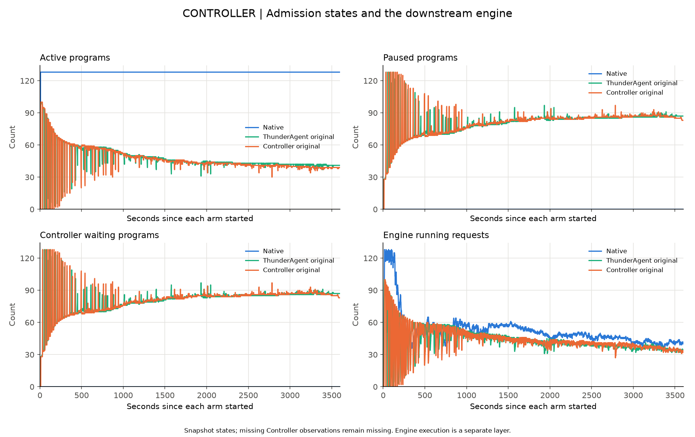
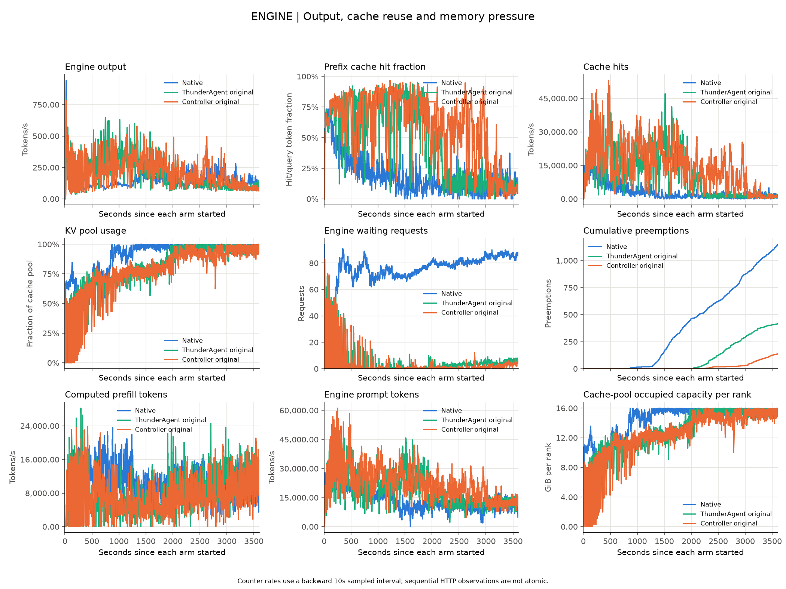
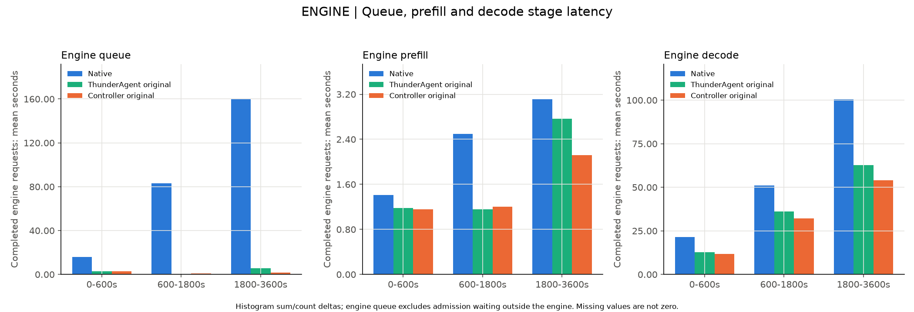
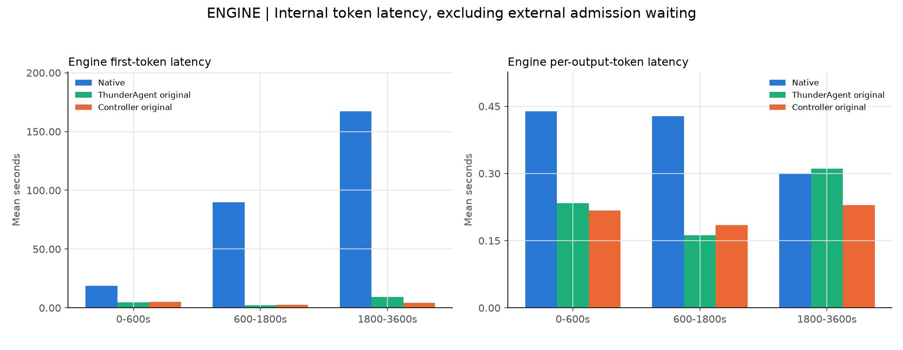
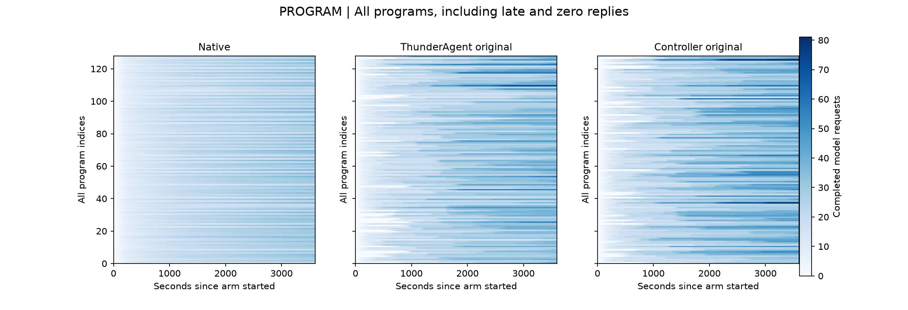
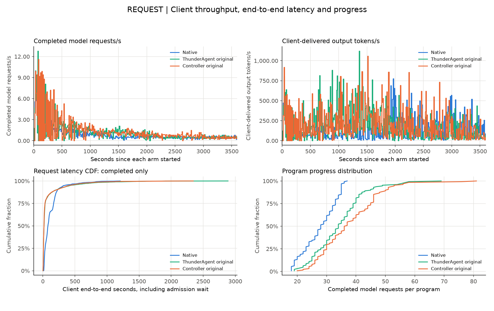
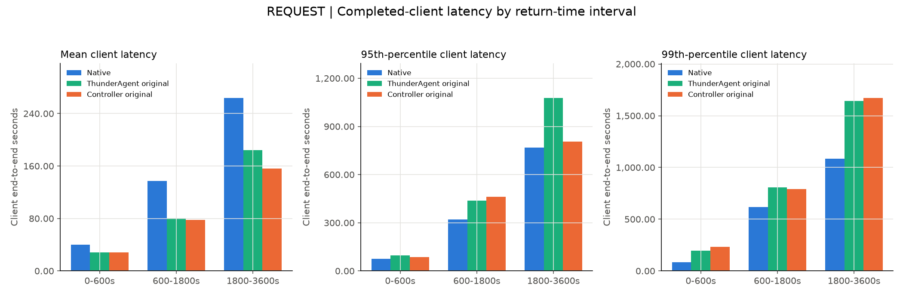
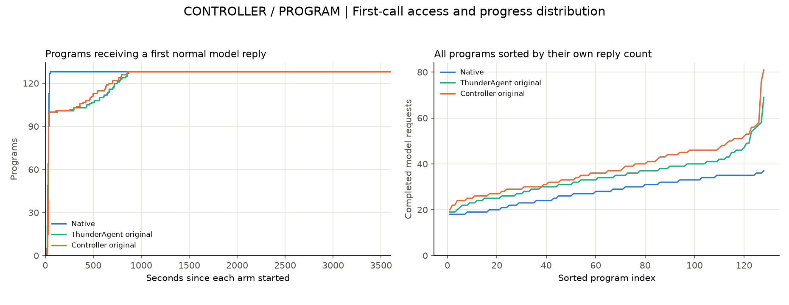
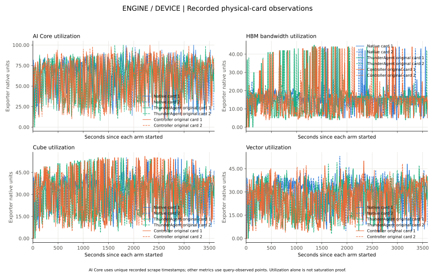

真实SWE-bench Pro中，Native、独立ThunderAgent原版、Controller原版的系统性能如何，后半程缓存变化来自哪里？
各组 3600 秒、每组 128 个真实 Agent program；整批 time0、无客户端 slots。
系统性能独立于解答提交数及质量评分。以下为同预算窗口性能，不是完整批次 makespan。
真实 Agent → Native / 独立 ThunderAgent 原版 / Controller 原版 → 同一模型引擎 → 返回 Agent → 实际工具 → 下一轮。
客户端延迟包含准入等待，按正常返回时间归窗；失败和窗口末未返回保留。引擎聚合直方图不能代替客户端分位数。
计数器使用段内首末实际采样，端点及分母见 summary.csv；非原子顺序采样不外推补齐。
| 组别 | 窗口末未返回请求 | 窗口内异常请求 |
| Native | 128 | 0 |
| ThunderAgent original | 128 | 0 |
| Controller original | 122 | 0 |
| 组别 | 阶段秒 | 引擎输出 token/s | 客户端 request/s | 平均延迟 s | P50 s | P95 s | P99 s | 缓存命中率 % | 抢占 |
| Native | 0-600 | 162.709 | 2.823 | 39.693 | 33.061 | 74.345 | 84.897 | 44.841 | 0.000 |
| Native | 600-1800 | 147.211 | 0.801 | 137.091 | 97.713 | 321.653 | 615.989 | 20.302 | 348.000 |
| Native | 1800-3600 | 150.171 | 0.500 | 263.997 | 193.866 | 769.213 | 1084.117 | 11.811 | 800.000 |
| Native | 0-3600 | 151.454 | 0.988 | 122.808 | 79.188 | 335.630 | 821.549 | 23.596 | 1148.000 |
| ThunderAgent original | 0-600 | 228.130 | 3.063 | 28.403 | 17.005 | 97.932 | 196.759 | 70.254 | 0.000 |
| ThunderAgent original | 600-1800 | 301.354 | 1.298 | 80.560 | 10.390 | 437.431 | 807.661 | 76.218 | 0.000 |
| ThunderAgent original | 1800-3600 | 118.718 | 0.566 | 184.438 | 31.539 | 1078.164 | 1643.063 | 24.600 | 416.000 |
| ThunderAgent original | 0-3600 | 197.783 | 1.226 | 82.799 | 17.788 | 429.800 | 1130.919 | 56.449 | 416.000 |
| Controller original | 0-600 | 224.296 | 3.290 | 28.235 | 19.023 | 85.237 | 231.951 | 72.056 | 0.000 |
| Controller original | 600-1800 | 278.809 | 1.397 | 78.056 | 11.377 | 462.821 | 790.225 | 77.821 | 0.000 |
| Controller original | 1800-3600 | 166.039 | 0.664 | 156.416 | 21.865 | 806.021 | 1672.902 | 48.405 | 137.000 |
| Controller original | 0-3600 | 213.322 | 1.346 | 77.101 | 17.510 | 411.274 | 963.342 | 65.249 | 137.000 |

按各组实际开始对齐。保留所有阶段及程序；状态快照不代表逐事件因果，设备利用率不单独证明硬件饱和。

按各组实际开始对齐。保留所有阶段及程序；状态快照不代表逐事件因果，设备利用率不单独证明硬件饱和。

按各组实际开始对齐。保留所有阶段及程序；状态快照不代表逐事件因果，设备利用率不单独证明硬件饱和。

按各组实际开始对齐。保留所有阶段及程序；状态快照不代表逐事件因果，设备利用率不单独证明硬件饱和。

按各组实际开始对齐。保留所有阶段及程序；状态快照不代表逐事件因果，设备利用率不单独证明硬件饱和。

按各组实际开始对齐。保留所有阶段及程序；状态快照不代表逐事件因果，设备利用率不单独证明硬件饱和。

按各组实际开始对齐。保留所有阶段及程序；状态快照不代表逐事件因果，设备利用率不单独证明硬件饱和。

按各组实际开始对齐。保留所有阶段及程序；状态快照不代表逐事件因果，设备利用率不单独证明硬件饱和。

按各组实际开始对齐。保留所有阶段及程序；状态快照不代表逐事件因果，设备利用率不单独证明硬件饱和。
三组真实模型输出会改变后续轨迹、请求长度和工具等待，因此比较的是同协议窗口系统行为。
ThunderAgent 与 Controller 出现相似下降仅支持共同因素，仍需区分原算法、共同适配、容量、引擎和工作负载。
缺少逐块 evict/touch 或逐请求缓存关联时，不把缓存命中变化直接写成已证驱逐因果；异常及收尾超时需结合原件单列。